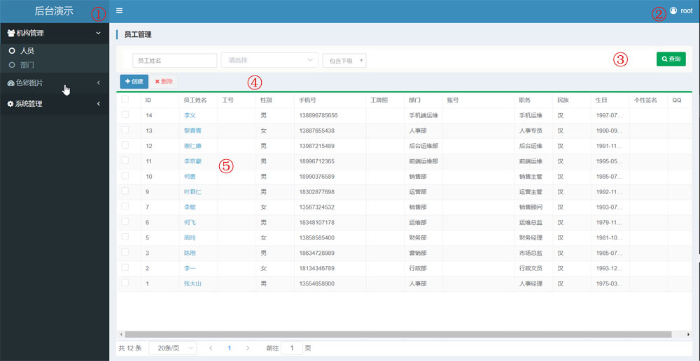

1. 演示后台¶
我们提供定制化的管理后台开发服务，重点是BS架构的软件开发。B:Brower浏览器;S:server远程服务器
普通的管理后台大致包括后端数据处理逻辑及其前端管理界面以及面向app等前端api接口。
在本系统中(本演示后台)用于演示目的，只关注管理界面以及相应数据处理逻辑，我们通过几个小的模块，向您大致演示下系统的基本功能。
1.1. 开发方式及特点¶
我们开发目标是中小型管理后台，我们的开发架构采用，后端python/django,前端vue.js的形式。python是非常优秀和流行的动态语言，语法简单，维护方便，除了现在流行的AI应用外，还被大量应用在web后端开发中。django作为pythonweb生态最重要的框架，提供的orm数据库组件极其优秀，能够自动管理和映射数据库表。大大简化和加速了开发过程。vue.js是当前最流行的前端组件化框架，其简单实用，运行效率高。利用vue.js将前端完全组件化后，可以配合后端ORM根据数据库结构自动组织管理界面，可以达到无与伦比的开发效率。此外带来了功能强大，但是结构简洁的权限系统。
此外，由于多年的工作以及个人兴趣，我们累积了大量的实践经验，完全可控的基于django的开发框架，可以做到灵活快速的响应客户不断变化的需求。
对于BS架构的软件，一般团队是分成两拨人进行开发。后端人员负责后端数据的处理（如存储于查询），并且向前端提供接口。前端人员复杂编写界面，展示数据，提供表单编辑数据。这种方式称为前后端分离的开发方式，较为通用，适合招聘对口人才，对于大型项目，需要多人协作，基本都采用前后端分离的方式。但是需要前后端协商沟通，开发效率并不高，软件排错和修改也比较麻烦。
普通中小型项目，往往有以下几个特点:
- 用户往往并不清楚自己想要的效果，在项目开发过程中，需求会不断发生变化。
- 投入资源有限，开发人员少。
不断变化的需求，必然造成其后台开发面临着无数次的修改。项目也从一些模糊抽象的理念一点点蜕变为具体的实体软件。这个雕琢的过程会带来大量无中生有的工作量，一旦超过开发人员的能力限度，会造成代码失控。一旦代码失控，开发人员将会放之任之，交差了事。对后期的继续开发和维护造成极大隐患。
在中小项目中，参与的人员少，沟通成本较低。开发人员独立性强，非常适合使用灵活性高的动态语言。python的使用增加了开发人员对代码的控制力。以前5个人写的业务，现在1个人就能搞定。而python过于灵活，代码约束少，难于检查的弱点，刚好在中小型项目中得到了缓解。
总之，我们具备丰富的中小型管理后台开发经验，能够快速的响应用户需求变更，以及长期维护的需求。
注解
很多团队不管项目的规模大小，一概采用前后端分离的开发模式，造成他们的开发成本非常高。当vue.js这类前端组件化框架成熟后，使得我们团队能够进化出更加高效的开发方式，使用非前后端分离的方式开发中小型项目。
1.2. 管理界面¶
后台的界面如下

- 主菜单区域。由一个树状菜单构成，可以点击白色小方块收缩。
- 用户菜单。可以退出或者修改密码。
- 过滤条件区域。包括搜索条件，各种过滤条件，以及搜索按钮。
- 功能按钮区，包含该页面支持的各种操作.
- 数据区域。蓝色的列一般代表可以点击。